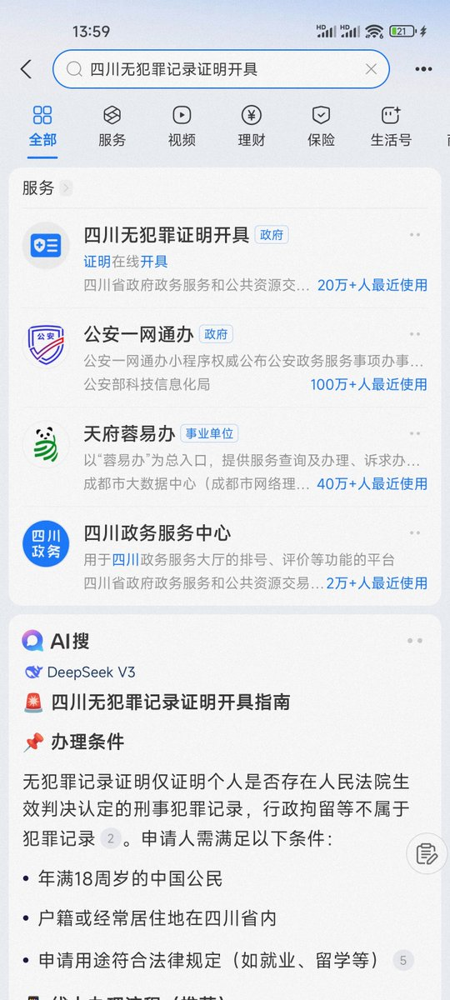
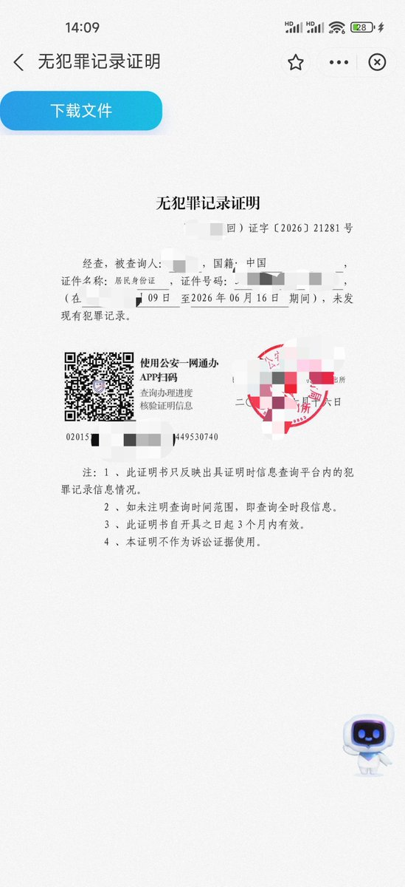

用支付宝开无犯罪记录证明还挺快的，不过有任何违反治安管理被处罚过的都开不了的，以四川省为例支付宝直接搜“无犯罪记录证明”，然后点进小程序，一步步操作就行，非常快的。虽然他写的1-3个工作日，实际上可能几个小时就有了
我专门了解过，支付宝上开的这个，你下载pdf文件后，去找个打印店，直接叫彩色打印，也就是打出来章是红色的这种，也认可为有效的。如果不确定，大家可以提前在百度上搜一下相关的派出所电话，直接打电话问，一般都会告诉你怎么在支付宝上开，不让你跑一趟
此外还可以扫图2的二维码，下载公安一网通，也可以开。以后有需要的大家可以参考，避免麻烦跑一趟，而且现实中去开，确实很麻烦，要有一定的权限账号才行，而且保不准正好负责的那个民警出警了，所以大家最好提前问，优先用线上
我专门了解过，支付宝上开的这个，你下载pdf文件后，去找个打印店，直接叫彩色打印，也就是打出来章是红色的这种，也认可为有效的。如果不确定，大家可以提前在百度上搜一下相关的派出所电话，直接打电话问，一般都会告诉你怎么在支付宝上开，不让你跑一趟
此外还可以扫图2的二维码，下载公安一网通，也可以开。以后有需要的大家可以参考，避免麻烦跑一趟，而且现实中去开，确实很麻烦，要有一定的权限账号才行，而且保不准正好负责的那个民警出警了，所以大家最好提前问，优先用线上

